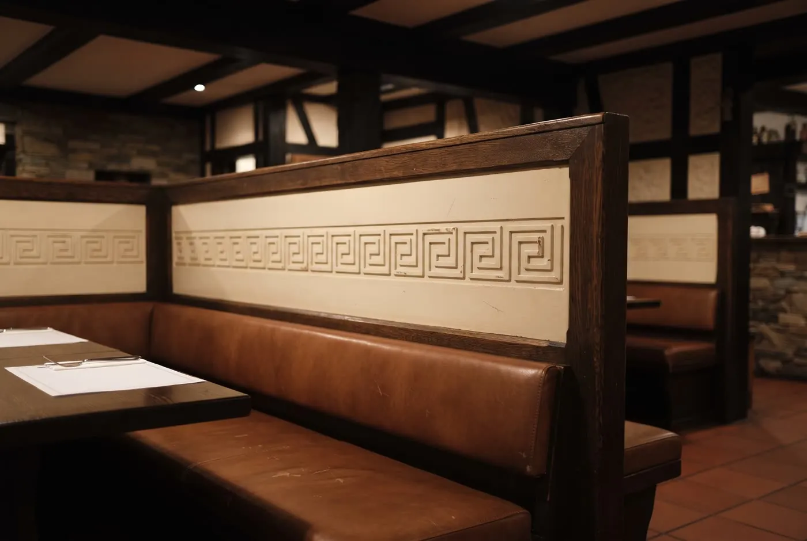
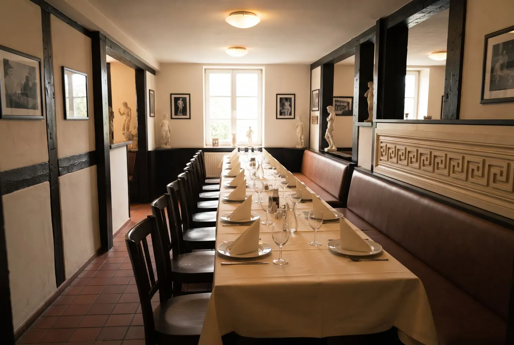
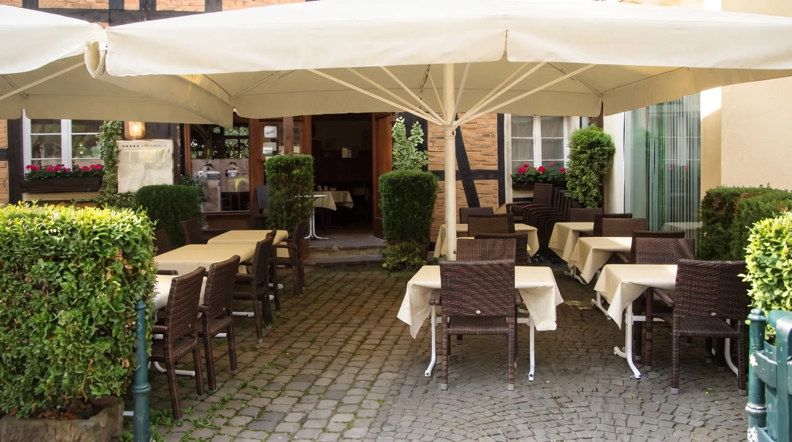

Irodion, griechisches Spezialitäten-Restaurant am Roggenmarkt 19 in Lünen. Benannt nach dem Odeon des Herodes Atticus in Athen. Seit 1983 führt die Familie Tzes dasselbe Haus in der Lünener Altstadt.
Ηρώδειο
Benannt nach einem Theater in Athen.
Gebaut in ein Fachwerkhaus in Lünen.
Griechische Küche am Roggenmarkt, seit 1983 dieselbe Familie.
Das Odeon des Herodes Atticus.
Am Fuß der Akropolis steht ein antikes Theater, fünftausend Plätze, gestiftet von Herodes Atticus. Auf Griechisch heißt es Ηρώδειο, und gespielt wird dort bis heute. Wir haben unser Haus danach benannt, weil sich an diesem Ort seit zweitausend Jahren Leute treffen, um einen Abend miteinander zu verbringen. Mehr wollten wir am Roggenmarkt eigentlich auch nie: dass Sie sich hinsetzen, in Ruhe essen und es nicht eilig haben müssen.
Ein Haus, eine Familie, vier Umbauten.
1983 haben wir hier aufgemacht, im Fachwerkhaus am Roggenmarkt. Die Adresse hat sich seitdem nicht geändert, nur das Haus ist mitgewachsen. Viermal haben wir angefasst, was nötig war, und die Nischen stehen immer noch da, wo sie immer standen. Wer öfter kommt, den begrüßen wir beim Namen. Und wer zum ersten Mal kommt, bekommt dieselbe Nische und dieselbe Begrüßung wie alle anderen: Kalós ílthate, schön, dass Sie da sind.
- 1983eröffnet
- 1990umgebaut
- 2009modernisiert
- 2017erweitert

Die Stammgäste bestellen mit einer Zahl.
Tippen Sie einfach eine Nummer ein, dann zeigen wir Ihnen, was dahintersteckt.
Die ganze Karte. Kein Download.
Warme Vorspeisen
- Dolmades hausgemachte, gefüllte Weinblätter mit Hackfleisch
- Aubergine hausgemacht, gefüllt mit Hackfleisch und Schafskäse
- Auberginen in Tomatensauce und Zwiebeln
- Saganaki panierter Käse
- Feta Furnu Schafskäse aus dem Backofen mit Knoblauch, Tomaten, Paprika, Zwiebeln, Olivenöl und Oregano
- Muscheln gebacken
- Muscheln Saganaki Muscheln in Tomatensauce mit Zwiebeln, Paprika und Käse
- Keftedakia Hackfleischbällchen in Tomatensauce
- Melitzanes gebackene Auberginenscheiben mit Tzatziki
- Kolokithaki gebackene Zucchinischeiben mit Tzatziki
- Paprika gebacken, mit Tzatziki
- Peperoni vom Grill, mit Knoblauch
- Pita Brot mit Öl und Oregano
- Warme Vorspeisenplatte vier kleine Saganaki, Tzatziki, Paprika, Melitzanes, Zucchini
Kalte Vorspeisen
- Peperoni
- Oliven
- Dolmadakia gefüllte Weinblätter mit Reis
- Tzatziki Joghurtquark mit Knoblauch und Gurken
- Tzatziki mit Shrimps
- Calamarisalat mit Zwiebeln und Öl, Essig
- Octapussalat mit Zwiebeln, Öl und Essig
- Schafskäse
- Taramas Fischrogen Paste
- Turokafteri Schafskäse Paste mit Knoblauch
Suppen
- Griechische Bohnensuppe
- Gulaschsuppe
- Tomatencremesuppe
- Hühnersuppe
- Zwiebelsuppe
Salate
- Großer gemischter Salat Krautsalat, grüner Salat, Möhren, Tomaten, Gurken, Peperoni, Käse, Oliven in Cocktailsauce
- Krautsalat mit Möhren
- Choriatiki, Bauernsalat Tomaten, Gurken, Paprika, Zwiebeln, Peperoni, Schafskäse, mit Öl und Essig
- Kalte Salatplatte Tzatziki, Schafskäse, Dolmadakia, Oktapus, Peperoni, Calamarisalat, Oliven, Taramas, Turokafteri, Shrimps
- Kleiner gemischter Salat Krautsalat, grüner Salat, Tomaten, Möhren und Cocktailsauce
- Thunfischsalat Thunfisch, Tomaten, Gurken, grüner Salat, Zwiebeln, Ei, Oliven
- Christos-Salat Hähnchenbrustfilet oder Gyros, Kopfsalat, Tomaten, Croutons, Gurken, Krautsalat, Parmesan, Mais, Balsamico
Vegetarische Gerichte
- Warme Vorspeisenplatte vier kleine Saganaki, Tzatziki, Paprika, Melitzanes und Zucchini
- Mussakas griechischer Auflauf bestehend aus Auberginen, Kartoffeln und Bechamelcreme, dazu gemischter Salat
- Gemüse mit Gouda-Käse überbacken
- Gemista mit Reis gefülltes Gemüse, Tomate und Paprikaschoten
Weitere vegetarische Gerichte auf Wunsch möglich.
Vom Grill
- Gyros mit Baby Calamari mit Panade, fünf Stück, dazu Pommes oder Reis und gemischter Salat
- Gyros mit Metaxasauce dazu Pommes oder Reis und gemischter Salat
- Gyros überbacken mit Käse und Metaxasauce, dazu Pommes oder Reis und gemischter Salat
- Gyros Schweinefleisch vom Drehspieß, dazu Pommes oder Reis und gemischter Salat
- Gyros mit Tzatziki dazu Pommes oder Reis und gemischter Salat
- Suvlaki zwei Schweinespieße, dazu Pommes oder Reis und gemischter Salat
- Bifteki drei Hackfleischfrikadellen, dazu Pommes oder Reis und gemischter Salat
- Bifteki gefüllt Hackfleisch gefüllt mit Schafskäse, dazu Pommes oder Reis und gemischter Salat
- Bifteki und Gyros Hackfleisch gefüllt mit Schafskäse, Gyros, dazu Pommes oder Reis und gemischter Salat
- Schweineleber dazu Pommes oder Reis und gemischter Salat
- Gyros mit Schweineleber dazu Pommes oder Reis und gemischter Salat
- Elenplatte zwei Schweinefiletspieße, dazu Pommes oder Reis und gemischter Salat
- Pita Gyros Gyros auf einem Teigfladen mit Tomaten, Zwiebeln, Tzatziki, dazu Pommes und Krautsalat
- Schweineschnitzel Natur dazu Pommes oder Reis und gemischter Salat
- Schweineschnitzel Wiener Art paniertes Schweineschnitzel mit Paprika- oder Champignonsauce, dazu Pommes oder Reis und gemischter Salat
- Schweinefilet dazu Pommes oder Reis und gemischter Salat
- Schweinefilet gefüllt mit Käse und Tomaten, dazu Pommes oder Reis und gemischter Salat
Gemischtes vom Grill
- Ouzo Teller zwei Bifteki, ein Suvlaki, Gyros, dazu Pommes oder Reis und gemischter Salat
- Christos Teller drei verschiedene Fleischsorten, Schweinefilet, Hähnchenbrustfilet und Rumpsteak mit drei verschiedenen Saucen, Metaxasauce, Champignonsauce, Pfeffersauce, dazu Pommes und gemischter Salat
- Spezial Teller Vorspeise ein Dolmas mit Tzatziki, Hauptgang ein Lammkotelett, ein Bifteki, ein Suvlaki, Gyros, dazu Pommes oder Reis und gemischter Salat
- Rhodos Teller ein Suvlaki, ein Schweineschnitzel, Gyros, ein Lammkotelett, dazu Pommes oder Reis und gemischter Salat
- Meteora Teller Gyros und ein Suvlaki, dazu Pommes oder Reis und gemischter Salat
- Akropolis Teller ein Lammkotelett, ein Schweinefiletstreifen, ein Suvlaki, Gyros, ein Bifteki, dazu Pommes oder Reis und gemischter Salat
- Artemis Teller mit Leber zwei Suvlaki und Schweineleber, dazu Pommes oder Reis und gemischter Salat
- Apollon Teller Suvlaki, ein Schweineleberstreifen, ein Bifteki, Gyros, dazu Pommes oder Reis und gemischter Salat
- Filet Teller ein kleines Schweinefilet und Gyros mit Metaxasauce, dazu Pommes oder Reis und gemischter Salat
- Korfu Teller ein Souvlaki, zwei Lammkoteletts und Gyros, dazu Pommes oder Reis und gemischter Salat
- Kreta Teller ein Lammkotelett, ein Schweineschnitzel, Leber, Gyros und ein Bifteki, dazu Pommes oder Reis und gemischter Salat
- Marathon Teller ein Suvlaki, ein Schweinesteak, Gyros, ein Schweineleberstreifen, dazu Pommes oder Reis und gemischter Salat
- Grill Teller ein Bifteki, ein Schweinesteak, ein Suvlaki, Gyros, mit Metaxasauce, dazu Pommes oder Reis und gemischter Salat
- Trikala Teller Gyros, ein Schweinesteak, mit Metaxasauce, dazu Pommes oder Reis und gemischter Salat
- Platon Teller Gyros, ein Schweinesteak, zwei Schweineschnitzel, mit Metaxasauce, dazu Pommes oder Reis und gemischter Salat
- Odysseus Teller Gyros, zwei Suvlaki, dazu Pommes oder Reis und gemischter Salat
- Saloniki Teller zwei Bifteki, ein Filetspieß, dazu Pommes oder Reis und gemischter Salat
- Kostas Teller ein Filetspieß, Gyros, ein Bifteki, ein Lammkotelett, dazu Pommes oder Reis und gemischter Salat
Lamm und Rind vom Grill
- Fünf Lammkoteletts dazu Pommes und Tzatziki und gemischter Salat
- Lammfilet mit grünen Bohnen dazu Pommes und gemischter Salat
- Lammfilet mit grünen Bohnen mit Pfeffersauce, dazu Pommes und gemischter Salat
- Argentinisches Rumpsteak etwa 250 Gramm, dazu Pommes, Kräuterbutter oder Pfeffersauce und gemischter Salat
- Lammkeule ohne Knochen dazu grüne Bohnen, Pommes und gemischter Salat
Platten für zwei oder vier Personen
- Spiros Platte Gyros, zwei Bifteki, zwei Souvlaki, zwei Schweineschnitzel und zwei Scheiben Leber, dazu Pommes oder Reis und gemischter Salat
- Irodion Platte zwei Suvlaki, zwei Lammkoteletts, zwei Bifteki, Gyros, dazu Pommes oder Reis und gemischter Salat
- Olympia Platte vier Lammkoteletts, vier Suvlaki, vier Schweineleberstreifen, vier Bifteki, Gyros, dazu Pommes oder Reis und gemischter Salat
Pfannengerichte
- Pelargos, Schweinefiletspitzen in Champignonsauce, dazu Butterreis und gemischter Salat
Hähnchen
- Diogenes Hähnchenbrustfilet, dazu Metaxasauce oder Champignonsauce, dazu Pommes oder Reis und gemischter Salat
Lamm aus dem Ofen
- Gemista Lammfleisch aus dem Backofen, mit Reis gefülltes Gemüse, Tomate und Paprikaschoten, und gemischter Salat
- Lammfleisch mit Spaghetti mit Schafskäse überbacken, dazu gemischter Salat
- Lammfleisch mit Nudeln und Schafskäse überbacken, dazu gemischter Salat
- Lammfleisch mit Auberginen und Schafskäse überbacken, dazu gemischter Salat
- Lammfleisch mit Okra und Schafskäse überbacken, dazu gemischter Salat
- Lammfleisch mit Fassolakia und Schafskäse überbacken, Lammfleisch mit Bohnenschoten in Tomatensauce, dazu gemischter Salat
- Lammfleisch mit Dicken Bohnen und Schafskäse überbacken, dazu gemischter Salat
- Stifado ein Eintopf aus Lammfleisch mit Zwiebeln, dazu gemischter Salat
Diese Gerichte werden ohne weitere Beilagen zubereitet.
Fischgerichte
- Calamaria Tintenfischringe, dazu frisches Gemüse, hausgemachte Fischsauce und gemischter Salat
- Baby Calamari mit oder ohne Panade, dazu frisches Gemüse, hausgemachte Fischsauce und gemischter Salat
- Garides fünf Scampi vom Grill, dazu frisches Gemüse, hausgemachte Fischsauce und gemischter Salat
- Pestrofa eine Forelle, mit frischem Gemüse und gemischter Salat
- Seezungenfilet dazu frisches Gemüse, hausgemachte Fischsauce und gemischter Salat
- Fischplatte sechs Tintenfischringe, vier Scampi, Sardinen, dazu frisches Gemüse, hausgemachte Fischsauce und gemischter Salat
- Gavros gebratene Sardinen, dazu frisches Gemüse, hausgemachte Fischsauce und gemischter Salat
- Lachsfilet dazu frisches Gemüse, hausgemachte Fischsauce und gemischter Salat
Typisch griechisch
- Pastitsio griechischer Auflauf aus Spaghetti, Hackfleisch, Bechamelcreme, mit Käse überbacken, dazu gemischter Salat
- Spaghetti mit Hackfleisch, Gouda und Sauce, ohne Salat
- Kritharaki Reisnudeln mit Hackfleisch und Gouda überbacken, in Tomatensauce, ohne Salat
- Paputsaki zwei gefüllte Auberginen mit Hackfleisch und Schafskäse überbacken, ohne Salat
- Mussakas griechischer Auflauf aus Auberginen, Hackfleisch, Kartoffeln und Bechamelcreme, dazu gemischter Salat
Für unsere kleinen Gäste bis 12 Jahre
- Suvlaki ein Suvlaki, dazu Pommes und gemischter Salat
- Schnitzel Wiener Art kleines paniertes Schweineschnitzel, dazu Pommes und gemischter Salat
- Gyros dazu Pommes und gemischter Salat
- Chicken Nuggets mit Pommes und gemischtem Salat
Beilagen
- Gemüse der Saison
- Reis
- Butterreis
- Pommes
- Kroketten
- Dicke Bohnen mit Schafskäse
- Grüne Bohnen
- Scheibenkartoffeln
Saucen
- Metaxasauce
- Champignonsauce
- Sauce Bearnaise
- Pfefferrahmsauce
- Sauce Hollandaise
Nachtisch
- Joghurt mit Honig und Walnüssen
- Halvas Süßwarenspezialität aus Sesammasse mit Metaxa und Zimt
- Vanilleeis mit Schokosauce
- Vanilleeis mit heißen Himbeeren
- Vanilleeis mit heißen Kirschen oder Amarena
- Gemischtes Eis
- Gemischtes Eis mit Sahne
- Schokosoufflee
- Galaktobureko Blätterteig mit Grießpudding, einer Kugel Eis und Sahne
Getränke
Warme Getränke
- Kaffee
- Espresso
- Espresso Doppio
- Griechischer Kaffee, Mokka
- Latte Macchiato
- Cappuccino
- Milchkaffee
- Tee
Alkoholfreie Getränke
- Cola
- Cola light
- Cola zero
- Spezi
- Orangenlimonade
- Zitronenlimonade
- Apfelschorle
- Traubensaftschorle
- Malztrunk
- Bitter Lemon
- Ginger Ale
- Apfelsaft, Orangensaft, Traubensaft
- Mineralwasser
- Fassbrause, Zitrone oder Holunder
Biere
- Krombacher Pils
- Hövels
- Schlösser Alt
- Alsterwasser, Radler
- Krombacher Alkoholfrei
- Krombacher Radler Alkoholfrei
- Paulaner Weizenbier
- Erdinger Alkoholfrei
Spirituosen
- Ouzo
- Sambuca
- Wodka
- Ramazzotti
- Fernet
- Jägermeister
- Baileys
- Bacardi Cola
- Wodka Lemon
- Metaxa fünf Sterne
- Metaxa sieben Sterne
- Metaxa flambiert
Die Preise stehen auf der Karte im Haus. Rufen Sie uns einfach an, wenn Sie vorher etwas wissen möchten, wir sagen es Ihnen gern.
Bei Beilagenänderungen berechnen wir zusätzlich den Preis der gewünschten Beilage. Statt gemischtem Salat reichen wir zum Aufpreis von 3,00 Euro einen Bauernsalat. Auf Wunsch überbacken wir alle Gerichte mit Metaxasauce und Käse zum Aufpreis von 3,50 Euro.
Sollten Sie von Allergien betroffen sein, melden Sie sich bitte. Unsere separate Allergiekarte gibt Ihnen Auskunft über die in den Speisen enthaltenen Zutaten.
Wenn Sie mehr werden, haben wir Platz.
2017 haben wir dafür angebaut. Seitdem teilen wir den Raum so, wie Sie ihn brauchen: mehrere kleine Runden oder eine lange Tafel. Ob Geburtstag, Taufe oder Firmenessen, sagen Sie uns am Telefon, wie viele Sie sind und was gefeiert wird. Den Rest stellen wir, und Sie kommen einfach.


Bei gutem Wetter sitzen Sie draußen.
Dann stellen wir die Schirme raus, auf das Kopfsteinpflaster am Roggenmarkt, zwischen die Fachwerkgiebel. Ein guter Platz für einen langen Sommerabend. Und wer lieber zu Hause isst: Rufen Sie vorher an, dann steht alles fertig da, wenn Sie kommen.
Mittwoch ist Ruhetag.
| Montag | 11:30 bis 14:3017:00 bis 22:30 |
|---|---|
| Dienstag | 11:30 bis 14:3017:00 bis 22:30 |
| Mittwoch | Ruhetag |
| Donnerstag | 11:30 bis 14:3017:00 bis 22:30 |
| Freitag | 11:30 bis 14:3017:00 bis 22:30 |
| Samstag | 11:30 bis 14:3017:00 bis 22:30 |
| Sonntag | 11:30 bis 14:3017:00 bis 22:30 |
Warme Küche mittags bis 14:00 Uhr, abends bis 22:00 Uhr.
An Feiertagen haben wir offen, auch mittwochs.
Rufen Sie an, dann steht der Tisch.
Zwei Sätze reichen uns: wie viele Sie sind und wann Sie kommen wollen. Um den Tisch kümmern wir uns. Und wenn Sie dann da sind, lassen Sie sich Zeit, die Küche ist bis 22:00 Uhr an.
Lieber schreiben? info@irodion-luenen.de Wir antworten, sobald im Haus eine ruhige Minute ist.